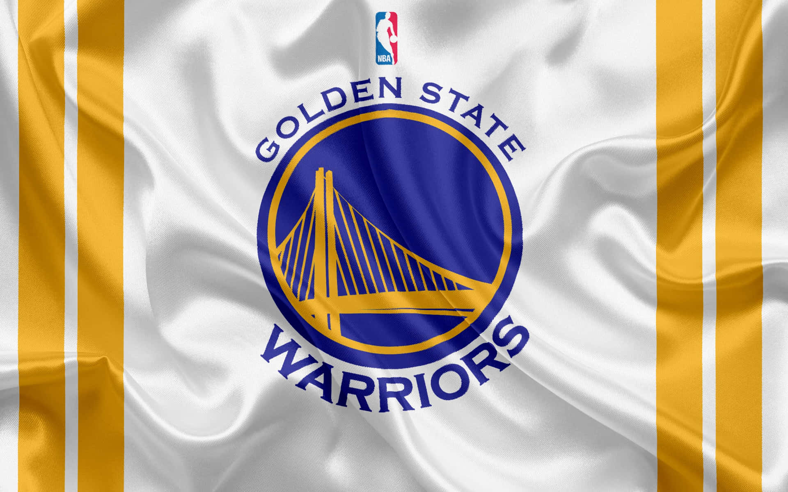

Golden State Warriors

¿Qué es?
Los Golden State Warriors (en español: Guerreros del Estado Dorado) son un equipo profesional de baloncesto de los Estados Unidos con sede en San Francisco, California. Compiten en la División Pacífico de la Conferencia Oeste de la National Basketball Association (NBA) y disputan sus partidos como locales en el Chase Center, ubicado en el barrio sanfranciscano de Mission Bay.
Los Warriors son una de las tres franquicias originales de la NBA que sobreviven en la actualidad,[Nota 1] y a lo largo de su historia han ganado un total de siete campeonatos de liga (son el tercer equipo más laureado de la competición, únicamente por detrás de los Boston Celtics y Los Angeles Lakers), siete títulos de Conferencia y doce títulos divisionales. Además, poseen el mejor registro de todos los tiempos en una temporada regular (73-9 en la 2015-16) y en unos Playoffs (16-1 en 2017).
Historia
Los Warriors fueron fundados en Filadelfia, Pensilvania en 1946 como Philadelphia Warriors, miembro de la BAA. El propietario era Pat Tyrrell, quien también poseía el equipo Philadelphia Ramblers de la American Hockey League. Tyrell contrató a Eddie Gottlieb, un promotor de baloncesto del área de Filadelfia, como entrenador y general mánager.
Liderados por el sensacional anotador Joe Fulks, los Warriors ganaron el campeonato en la temporada inaugural, la 1946-47, batiendo a Chicago Stags en cinco partidos (la BAA se unió a la NBA en 1949). Gottlieb compró la franquicia en 1951.
Trayectoria
Los Golden State Warriors son una franquicia histórica de la NBA fundada en 1946 en Filadelfia, sumando 7 campeonatos totales (1947, 1956, 1975, 2015, 2017, 2018, 2022). Tras mudarse a California en 1962, se consolidaron como una dinastía moderna bajo la era de Stephen Curry y Steve Kerr, destacando por su récord de 73-9 en 2016 y su estilo de juego revolucionario.